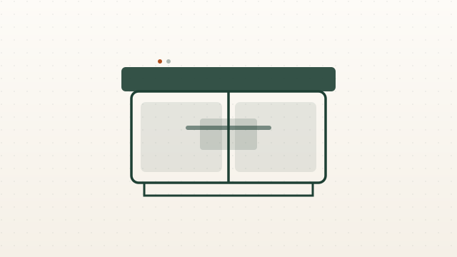
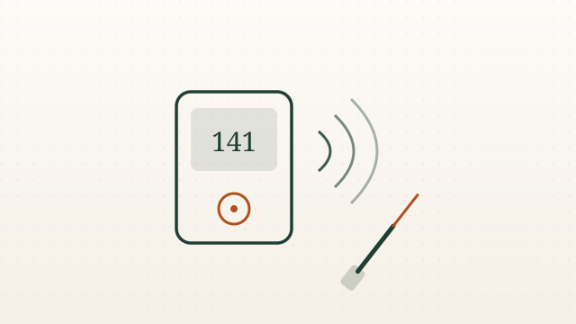

Five products · two categories · no invented tests
The kitchen gear worth arguing about.
Three air fryers and two thermometers, compared on the things that survive contact with a real kitchen: where the machine lives, how you get food out of it, and what it costs you in washing up.
Start here
What are you actually trying to cook?
If the answer involves two things at different temperatures, you want a different machine than if it involves one big thing. These two openings cover most kitchens.
Air fryers
Dual basket, single basket, or a countertop oven with a French door. Capacity is the number they print; access and footprint are the numbers that matter.
Thermometers
An instant-read for a number, a wireless probe for a climb. The USDA minimum temperatures are here too, because they are why you own one.
The five
Picked by specification, described without pretending
Each page states what the listing claims, what the arithmetic says, and what this desk cannot tell you. Nothing here is a hands-on review, because nothing here has been handled.

The two-basket workhorseChefman 6 qt dual basket
A household that regularly cooks two different things at once — protein in one basket, vegetables in the other — and wants to finish them together.
 The single-basket big batch
The single-basket big batch
Chefman 8 qt TurboFry
Big single batches — a whole chicken’s worth of wings, a full tray of fries — where splitting across two baskets would be a nuisance.
 The countertop oven that air-fries
The countertop oven that air-fries
Emeril Lagasse 26 qt French door
Anyone who wants one machine to roast, toast and air-fry, and who has the counter depth for aFrench-door oven rather than a tall basket unit.
 The instant-read that lives in the drawer
The instant-read that lives in the drawer
ThermoMaven 1-second thermometer
Everyday cooking where you want a fast number and a rinse under the tap, and you would rather not manage an app.

The leave-in probe with a radioCHEF iQ Sense Gen3
Long cooks — smoking, roasting, an air-fried chicken — where you want to watch a temperature climb without standing over it.
The notebook
Question-shaped guides
Written to answer the thing you typed into a search bar, not to rank for a product name.
Basket or oven-style air fryer: what should you compare?
Two machines, both called air fryers, doing different jobs.
A no-hype checklist for comparing air fryer capacity
Manufacturers quote quarts.
Cleanup and counter space: the trade-offs to assess
The two costs nobody compares when they buy an air fryer: how much of the sink it takes, and how much of the counter it permanently occupies.
Questions to ask before buying a multi-function appliance
Twenty-four presets is not a feature list; it is a menu.
The honest part
Everything on this site is a specification judgement, and it says so.
This desk has not used any of these five products. The manufacturer's listing is the source, the arithmetic is shown, and where a number is missing the page says it is missing rather than filling it in.
That costs us the word “tested”. It buys a page you can check.
One guide a fortnight
No list exists yet, and this form will not pretend one does. When a provider is chosen it will say who holds the address before it asks for it.
Nothing is transmitted. See the five measured events.